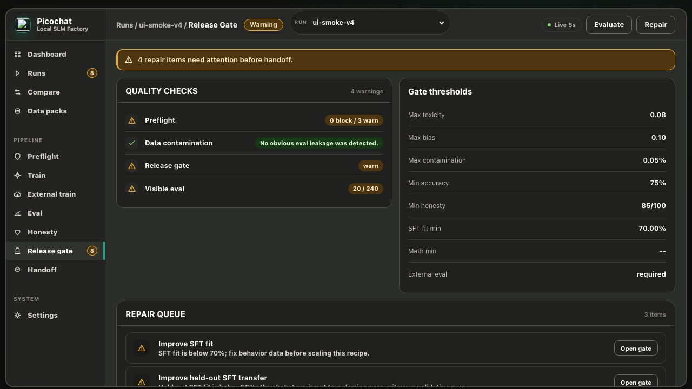
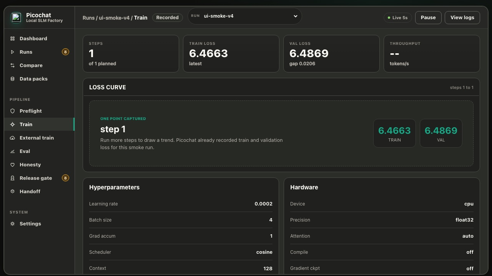
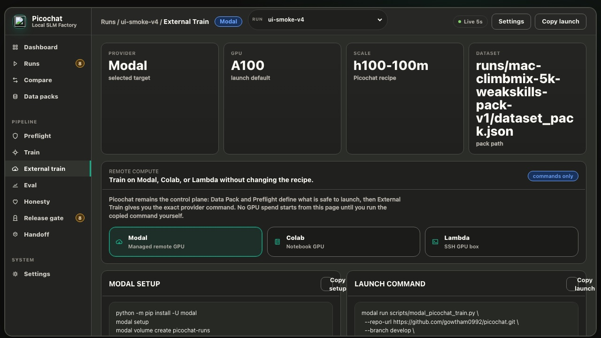

Picochat is a from-scratch training factory for 100M-1B class language models with preflight gates, contamination checks, DDP dry runs, crash-safe checkpoints, and a release-readiness dashboard. It is inspired by Andrej Karpathy's nanochat and built around a different product goal: make the factory hard to fool.
picochat run tiny owns the full native factory: tokenizer, base pretraining, SFT, optional DPO, eval, and release gate.
picochat train hf-sft starts from a Hugging Face causal LM such as SmolLM and writes HF model folders.
picochat eval, picochat registry, and picochat serve keep release claims inspectable.
The model evidence page tracks what is published, what is pending, and what artifacts a public checkpoint must include.
Checks token/parameter budget, replay risk, SFT/eval coverage, attention backend, DDP shape, and contamination before GPU spend.
Crash-safe checkpoints, resume fingerprints, shard SHA256 checks, loss spike warnings, and BPB/loss traces make failures visible.
The long-run gate can still block release on SFT fit, held-out fit, visible eval, external benchmarks, prompt echo, or honesty issues.
The 100M runbook uses a bounded SmolLM-Corpus pack and requires preflight, dry run, eval, release gate, and honesty evidence.
Docker and OpenAI-compatible smoke serving paths make demos repeatable while keeping high-throughput serving limits explicit.
CI, pull request templates, and result issue templates keep outside changes tied to tests, docs, and release evidence.
picochat registry turns completed runs into a model table and release card with gate, eval, budget, honesty, and checkpoint evidence.
The External Train lane emits Modal, Colab, and Lambda commands for setup, sanity, ClimbMix or SmolLM-Corpus import, release-skills SFT/eval pack generation, preflight, dry run, full training, bundle, and return inspection.
picochat run tiny \ --scale h100-100m \ --dataset-pack runs/smollm-100m-pack-v1/dataset_pack.json \ --device cuda \ --preflight-only


